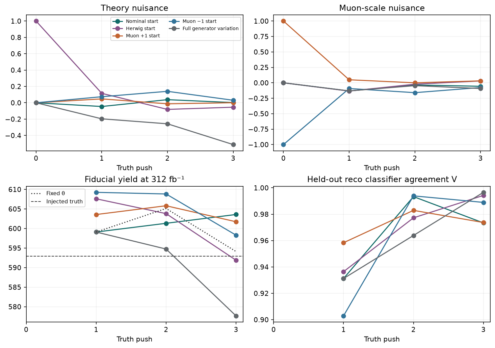
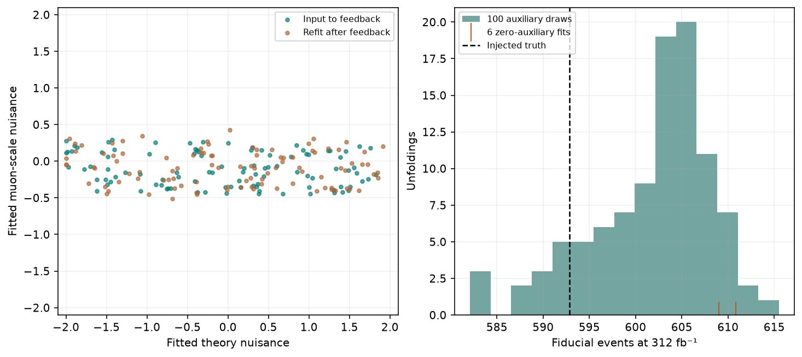
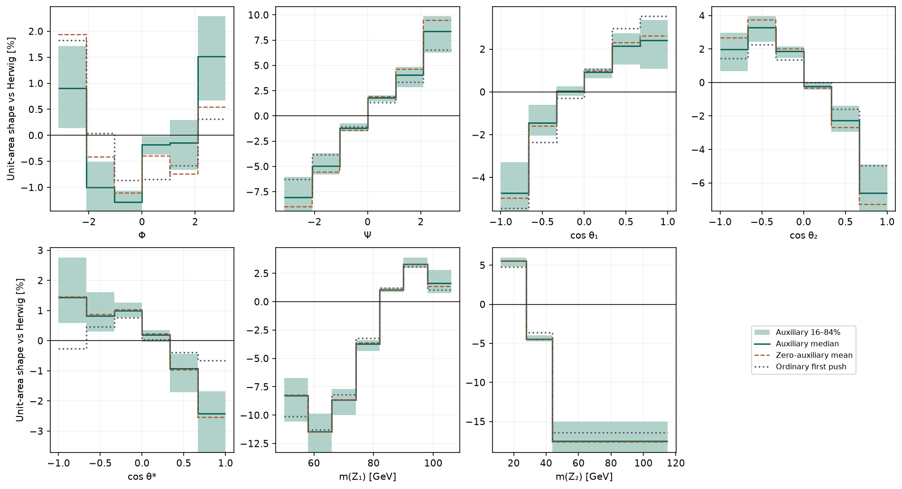

Research slides · Ordinary closure · Plot gallery · 2026-11-20 18:46 UTC
Profiled Run 3 unfolding
The corrected member-47 first profile is (-0.04, -0.12) in (theory, muon scale). With one feedback push the central trajectory gives 601.32 fiducial events. The ordinary first push gives 599.09 and injected Herwig gives 592.87.
The 100 auxiliary unfoldings give 603.69 fiducial events at the median, with a 16th–84th percentile range of 594.65–607.66. Their standard deviation is 6.63 events. Six zero-auxiliary reruns give 0.75 events of numerical spread. The auxiliary spread exceeds the spread of the six zero-auxiliary fits. Six controls give limited precision on the numerical contribution.
Convergence of the nuisance fit
We hold the member-47 Higgs data and fitted background subtraction fixed at 312 fb⁻¹. The central trajectory begins at nominal Pythia. Its first truth estimate is identical to the certified ordinary first push. The two fitted nuisances act on the paired detector response for the next truth update. Three diagnostic pushes probe convergence from four physical starting responses. The largest differences between the four endpoints at push three are 0.09 theory and 0.11 muon auxiliary standard deviations. A common fitted nuisance value can coexist with draw- or training-dependent truth shapes.

| Start or convention | Nuisances at push 1 | Push 2 | Push 3 | Fiducial 1 | Fiducial 2 | Fiducial 3 |
|---|---|---|---|---|---|---|
| Nominal start | (-0.05, -0.13) | (+0.04, -0.03) | (+0.00, -0.06) | 599.09 | 601.32 | 603.58 |
| Herwig start | (+0.12, -0.13) | (-0.08, -0.02) | (-0.05, +0.03) | 607.59 | 603.80 | 591.89 |
| Muon +1 start | (+0.05, +0.05) | (-0.01, +0.00) | (+0.00, +0.03) | 603.57 | 605.81 | 601.72 |
| Muon −1 start | (+0.07, -0.09) | (+0.14, -0.16) | (+0.03, -0.08) | 609.24 | 608.83 | 598.29 |
| Full generator variation | (-0.20, -0.13) | (-0.26, -0.05) | (-0.51, -0.09) | 599.09 | 594.74 | 577.65 |
Can the fit recover an injected nuisance?
The table compares two extended likelihood integrals with identical saved detector NNs. The direct-rate calculation uses the physical signed endpoint yields. The second integrates the raw NN intensity on one half of the nominal closure sample. The injected Asimov observations come from the other half of each endpoint and carry its physical rate. Global observables are centered on each injection. The raw NN scores, event weights and Gaussian constraints are identical in each paired comparison.
| Asimov sample | Injected (theory, muon) | Direct endpoint rates | Integrated NN intensity |
|---|---|---|---|
| nominal | (+0.00, +0.00) | (-0.50, +0.00) | (-0.01, -0.07) |
| theory | (+1.00, +0.00) | (+0.52, +0.00) | (+0.99, +0.02) |
| up | (+0.00, +1.00) | (-0.51, +0.82) | (-0.05, +0.90) |
| down | (+0.00, -1.00) | (-0.51, -0.95) | (-0.02, -1.14) |
The nominal Asimov fit moves from (-0.50, +0.00) to (-0.01, -0.07). The corresponding change in member 47 is from (-0.53, +0.00) to (-0.04, -0.12). In this sample, sub-percent raw-ratio integral errors can move a weakly constrained nuisance by a substantial fraction of its auxiliary uncertainty. The score functions receive no post-hoc calibration. Direct-rate controls, original endpoint ratios and training diagnostics.
What the uniform auxiliary ensemble changes
We draw 100 independent pairs uniformly in [−2,+2]². Each uses the same first-push truth, its own constrained profile, one new reco pull and truth push, and a refit using its updated reco likelihood and three response classifiers. Six additional runs set both global observables to zero and repeat the same protocol with the same training seeds. All 106 retained positive fitted intensities on the checked held-out events. 3 of the 100 final fits reach the ±2 scan boundary. The six numerical controls include floating-point effects, stochastic GPU training and early stopping.


Three full-resolution figures · All auxiliary observations, fits and yields (CSV) · Full training diagnostics for auxiliary draw 76.
Which generator change is profiled?
The primary model puts undeformed Herwig on the Pythia fiducial truth distribution before applying the current unfolded weights. The muon variations share exactly the same selected fiducial truth bank as nominal Pythia. This model preserves signed efficiency and detector-shape changes at fixed measured truth. A complementary fit assigns the full unaligned Herwig rate and truth-shape change to the theory nuisance, as well as its detector response. With identical frozen NNs within that comparison its first integrated fit is (-0.17, -0.14). Its feedback push gives 594.74 fiducial events.
The pilot uses one in sixteen hard-event identities, independent of the nominal pseudo-data source partition. Reco pull retains its four width-64 networks. Truth push, reco likelihood and the signed endpoint models each have four width-1024 networks. At each updated truth spectrum we refold the original paired endpoint simulations. The event intensities depend linearly on the single theory endpoint and piecewise linearly on the up and down muon endpoints. Negative theory and combined shifts are extrapolations. We profile an extended observed-data likelihood with two unit Gaussian auxiliary constraints and fixed purity weights. This implements the project’s reconstructed-likelihood update. The published EM algorithm maximizes a complete-data objective. Its multiple-start and held-out weighted-accuracy checks are used here. Profile OmniFold · ATLAS neural likelihood.
Network validation by iteration
Each linked stage has signed held-out reweighting, raw score calibration, loss, score and ensemble diagnostics. The pilot uses the frozen ordinary hyperparameters with a fixed large ensemble for the endpoints. The full-resolution diagnostics for every auxiliary fit are retained in its Unity campaign directory.